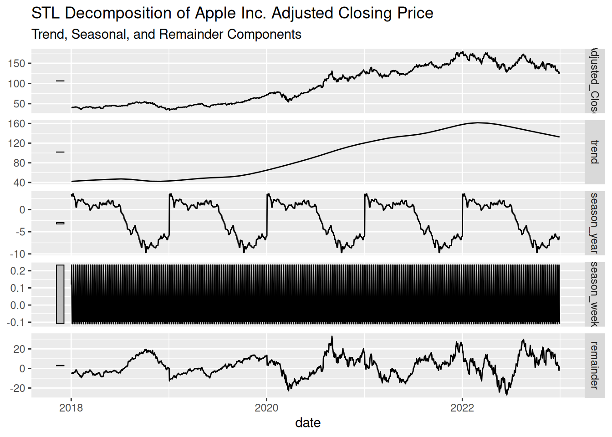
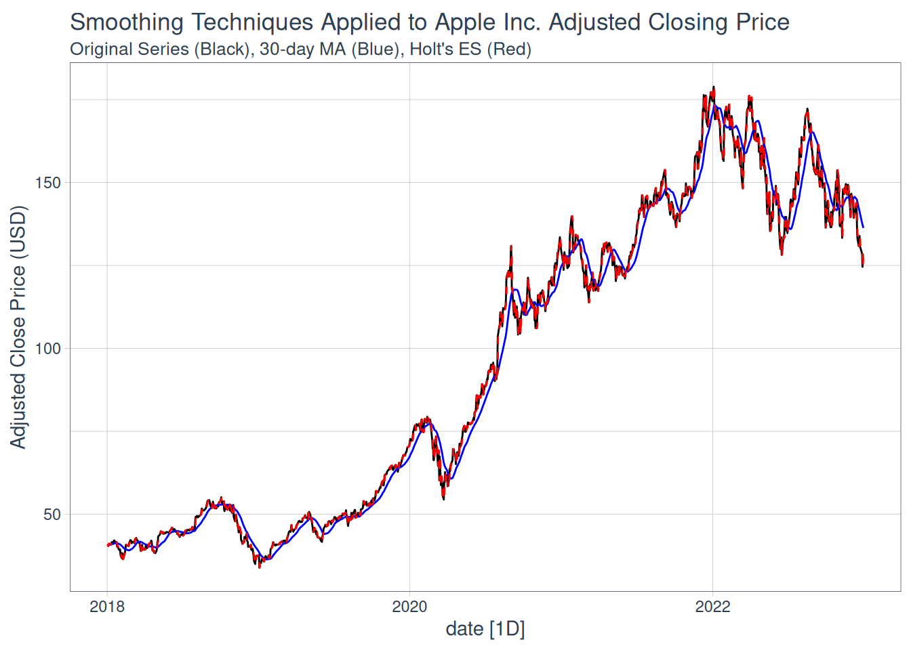
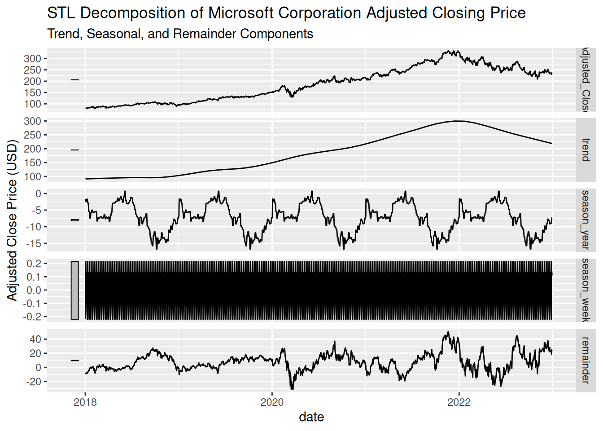

Understanding Components, Decomposition, and Smoothing
Time series data often exhibit patterns that evolve over time. Three key components to recognize in many series are trend, seasonality, and noise. Understanding these components is crucial for forecasting and interpretation.
Trend: Refers to the long-term progression of the series — an overall increase, decrease, or stable behavior over a period.
Seasonality: Captures repeating patterns or cycles, such as higher sales every December or temperature variations across seasons.
Noise: Represents random fluctuations or irregularities in the data that are not explained by trend or seasonality.
Mathematically, a time series \(y_t\) can be represented as a combination of these components:
Additive Model:
\[
y_t = T_t + S_t + R_t
\] where:
\(T_t\) is the trend component,
\(S_t\) is the seasonal component,
\(R_t\) is the remainder or residual (noise) component.
Multiplicative Model:
\[
y_t = T_t \times S_t \times R_t
\]
This form is useful when seasonal fluctuations change proportionally to the series level.
Decomposition and Visualization
To analyze these components, we can use decomposition methods such as classical decomposition or STL (Seasonal-Trend decomposition using Loess). These methods separate a time series into its trend, seasonal, and remainder components, providing insights into underlying patterns.
Steps in Decomposition:
Fit an STL decomposition model to the series, specifying a seasonal window to capture recurring patterns.
Extract the trend, seasonal, and remainder components.
Plot the decomposed components:
The observed series.
The extracted trend component.
The seasonal component, revealing periodic patterns.
The remainder (residuals) after removing trend and seasonality.
These plots allow us to visually inspect how much of the variation in the data is due to trend, seasonal effects, or noise.
Smoothing Techniques
Smoothing helps to highlight the trend by reducing short-term fluctuations.
Moving Average Smoothing:
Each point is replaced by the average of its neighbors over a specified window.
This technique smooths out short-term variations, making long-term trends more visible.
Exponential Smoothing:
Applies decreasing weights to older observations, making it responsive to recent changes.
Applied Example with Tidyverts Ecosystem
# Step 1: Retrieve stock data using tq_get()stock_data <-tq_get("AAPL", get ="stock.prices", from ="2018-01-01", to ="2023-01-01") %>%select(date, adjusted) %>%rename(Adjusted_Close = adjusted)# Convert to a tsibble objectstock_ts <-as_tsibble(stock_data, index = date) %>%fill_gaps() %>%mutate(Adjusted_Close =na.approx(Adjusted_Close))# Step 2: STL Decompositiondecomp <- stock_ts %>%model(STL(Adjusted_Close ~trend(window =365) +season(window ="periodic"))) %>%components()# Plot the decomposed componentsautoplot(decomp) +labs(title ="STL Decomposition of Apple Inc. Adjusted Closing Price",subtitle ="Trend, Seasonal, and Remainder Components")

# Step 3: Smoothing Techniques# Moving Average Smoothing (30-day window)stock_ts <- stock_ts %>%mutate(Moving_Avg = slider::slide_dbl(Adjusted_Close, mean, .before =29, .after =0))# Fit Holt's method using fablefit_holt <- stock_ts %>%model(Holt =ETS(Adjusted_Close ~error("A") +trend("A") +season("N")))# Extract fitted valuesholt_fc <- fit_holt %>%augment() %>%select(date, .fitted)# Plot the original series, moving averagestock_ts %>%autoplot(Adjusted_Close, color ="black") +autolayer(stock_ts, Moving_Avg, color ="blue") +autolayer(holt_fc, .fitted, color ="red", linetype ="dashed") +labs(title ="Smoothing Techniques Applied to Apple Inc. Adjusted Closing Price",subtitle ="Original Series (Black), 30-day MA (Blue), Holt's ES (Red)",y ="Adjusted Close Price (USD)") +theme_tq()

Lab Activity:
Apply the concepts of time series decomposition and smoothing using the Tidyverts ecosystem in R. Use the stock data for Microsoft Corporation (MSFT) obtained via the tidyquant package. Perform the following tasks:
Decompose the time series for Microsoft’s adjusted closing price using STL decomposition. Visualize the trend, seasonal, and remainder components.
Apply smoothing techniques (e.g., moving average or exponential smoothing) to the same series and compare the results.
Interpret the components and smoothed series to identify trends, seasonality, and noise.
# Step 1: Retrieve Microsoft stock data using tq_get()msft_data <-tq_get("MSFT", get ="stock.prices", from ="2018-01-01", to ="2023-01-01") %>%select(date, adjusted) %>%rename(Adjusted_Close = adjusted)# Convert to a tsibble objectmsft_ts <-as_tsibble(msft_data, index = date) %>%fill_gaps() %>%mutate(Adjusted_Close =na.approx(Adjusted_Close))# Step 2: STL Decompositiondecomp <- msft_ts %>%model(STL(Adjusted_Close ~trend(window =365) +season(window ="periodic"))) %>%components()# Plot the decomposed componentsautoplot(decomp) +labs(title ="STL Decomposition of Microsoft Corporation Adjusted Closing Price",subtitle ="Trend, Seasonal, and Remainder Components",y ="Adjusted Close Price (USD)")

# Step 3: Smoothing Techniques# Moving Average Smoothing (30-day window)msft_ts <- msft_ts %>%mutate(Moving_Avg = slider::slide_dbl(Adjusted_Close, mean, .before =29, .after =0))# Fit Holt's method using fablefit_holt <- msft_ts %>%model(Holt =ETS(Adjusted_Close ~error("A") +trend("A") +season("N")))# Extract fitted valuesholt_fc <- fit_holt %>%augment() %>%select(date, .fitted)# Plot with Holt smoothingmsft_ts %>%autoplot(Adjusted_Close, color ="black") +autolayer(msft_ts, Moving_Avg, color ="blue") +autolayer(holt_fc, .fitted, color ="red") +labs(title ="Smoothing Techniques Applied to Microsoft Corporation Adjusted Closing Price",subtitle ="Original Series (Black), 30-day MA (Blue), Holt's ES (Red)",y ="Adjusted Close Price (USD)")